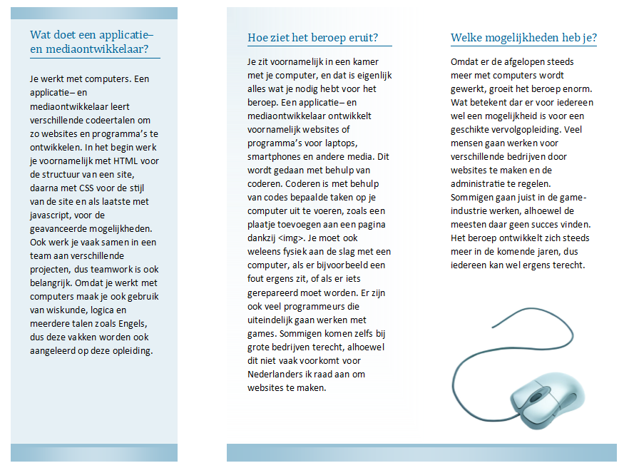

In de tijd dat ik op deze opleiding zit heb ik al een paar projecten gemaakt. Deze verschillen van zelfgemaakte logo's tot websites voor restaurants en zelfs folders voor onze opleiding. Ik vertel hier zo direct meer over.
Dit zijn de desktop en mobiele versie van m'n eerste zelf-geprogrammeerde website: The Golden Dragon. Het doel was om een correcte website te maken voor een willekeurig restaurant, en in mijn geval was dat een chinees restaurant genaamd the Golden Dragon. Er waren diverse eisen voor de website, zoals een verplicht logo, een menu, een gallerijpagina, een contactformulier etc., en deze pagina's hadden elk ook hun eigen specifike eisen. Voor de rest moest je zelf je keuzes maken qua design en indeling. Het design is simpel, maar dat past juist beter bij het beeld van een chinees restaurant, en de kleuren passen goed. Een geslaagde eerste website, al zeg ik het zelf.
Dit is een zelf-ontworpen logo voor een energydrank-website genaamd "DOPE!". De website zelf is nog een work-in-progress, maar ik heb wel alvast m'n eigen logo kunnen ontwerpen. Ik geef toe: het is niet het beste logo, maar t past redelijk bij het energydrank en tieners thema. De kleuren zijn fel en opvallend, wat je doet denken aan energy, en het graffiti gedeelte past goed bij de jongeren. Mijn grootste probleem is wel dat de paarse achtergrond niet helemaal goed past in contrast op de lichtgroene tekst, maar ik heb niet echt de sterkste ontwerp-vaardigheden.
Dit zijn de voor- en achterkant van de folders die ik met een klasgenoot moest maken voor de eerste ouderavond. We moesten duidelijk maken wat de opleiding inhoud, wat je er later mee kan, wat de vakken zijn etc. Dit was een van de eerste projecten die ik op deze opleiding had gemaakt, dus het stelt niet veel voor, maar ik dacht dat het wel past in een portfolio.
